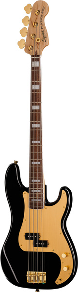

Schecter Hellraiser C-7 FR S BC

€ 1.444
Electric Guitar
Mahogany body
Maple top (quilted maple)
3-Piece mahogany neck
Thin C neck profile
Rosewood fretboard (Dalbergia Latifolia)
Fretboard radius: 406 mm
24 XJ Frets
673 mm scale length
47.6 mm nut width
EMG 81-7 Humbucker (bridge)
Sustainiac Pickup (neck)
1 x Volume control
1 x Tone control
3-Way toggle switch
2-Way Sustainiac Switch (On / Off)
3-Way Sustainiac Mode Switch (Fundamental / Mix / Harmonic)
Grover machine heads
Floyd Rose Tremolo
Black chrome hardware
Strings: Ernie Ball Regular Slinky 7 # 2621 (.010-.056)
Finish: Black Cherry
Fender Dave Murray Strat 2TSB
€ 1.199
Electric Guitar
Dave Murray (Iron Maiden) signature model
Body: Alder
Neck: Maple
Neck profile: C
Fretboard: Rosewood
Compound radius: 9.5" - 14"
21 Medium jumbo frets
Scale: 648 mm
Nut width: 42.8 mm
Pickups: Seymour Duncan Hot Rails SHR-1B (bridge), Seymour Duncan JB Jr. SJBJ-1N (middle) and Seymour Duncan Hot Rails SHR-1N (neck)
5-Way toggle switch
1x Master volume control
2x Tone control
Floyd Rose® FRT-O1000 Double Locking 2-Point Tremolo
Chrome hardware
Strings: .009 - .042
Colour: 2-Tone Sunburst
Incl. Deluxe gig bag
Gretsch G6119T-62VS Chet Atkins

€ 2.777
Electric Guitar
Vintage Select model
Design: Hollow-body with cutaway
Body: 3-Ply laminated maple
Body width: 40.64 cm (16")
Body depth: 4.76 cm (1.875")
Parallel bracing
Maple neck with walnut strip
Rosewood fretboard
Neo Classic Thumbnail inlays
Neck radius: 12"
22 Frets with zero nut
Bone nut
Nut width: 42.6 mm
Scale: 624 mm
Pickups: 2 TV Jones TV-HT HiloTron
Rocking bar bridge
Gretsch Bigsby B6 tremolo
Grover Sta-tite machine heads
Strings: D'Addario .011 - .049
Colour: Deep Cherry Stain
Incl. case
Gibson 1959 ES-355 Reissue EB VOS
€ 5.777
Electric Guitar
Custom Shop Model
VOS - Vintage Original Specifications
Body: Laminated maple/poplar/maple
One-piece neck: Mahogany
Fretboard: Ebony
Fretboard inlays: Pearl blocks
Headstock inlay: Split diamond
Body binding: 5-Ply
Neck profile: Authentic '59 medium C
22 Frets
Scale: 628 mm
Pickups: 2 Custombucker AlNiCo III humbuckers
2 Volume controls
2 Tone controls
Bridge: ABR-1
Stoptail: Aluminium
Machine heads: Grover
Hardware: Gold-plated
Colour: Ebony
Includes a case and Custom Shop certificate
Made in the USA
Furch GNc4-SR
Furch GNc4-SR
€ 2.111
Classical Guitar
With cutaway
Top: Solid sitka spruce
Back & Sides: Solid rosewood (Dalbergia latifolia)
Neck: Mahogany
Fretboard: Ebony
Nut width: 45 mm
Scale: 650 mm
18 Frets
Pickguard: Transparent anti scratch
Strings: Savarez HT
Colour: Natural (glossy)
Includes a case
Made in Europe (Czech Republic)
Sandberg California II TM4 TB

€ 1.990
Electric Bass
Body: Alder
Bolt-on neck: Roasted maple
Fretboard: Roasted maple
22 Frets
Scale: 864 mm (34")
Nut width: 39.4 mm (1.55")
Pickups: Delano JMVC and Delano MCFE humbucker
Electronics: 2-Band EQ active / passive
Controls: Master Volume (push/pull active/passive), Balance, Treble, Bass
White pickguard
Sandberg lightweight machine heads
Chrome hardware
Colour: Tobacco
Bag included
Made in Germany
Ibanez K5-BKF
Ibanez K5-BKF
€ 1.129
5-String Electric Bass
Fieldy (Korn) Signature Series
5-String
Nyatoh body
5-Ply maple / walnut neck
K5 Special fretboard inlay
Jatoba fretboard
Die-Cast EB-7 bridge
Black hardware
Pickup: IBZ ADX5-N (neck) and IBZ ADX5-B pickup (bridge)
Active Vari-Mid III-3-Band EQ
Colour: Black Flat
Squier 40th P Bass Black

€ 348
Electric Bass
40th Anniversary Gold Edition
Body: Nyatoh
Neck: Maple
Fingerboard: Laurel
Pearloid block fingerboard inlays
Neck profile: C
Scale: 864 mm (34")
Fretboard radius: 241 mm (9.5")
Nut width: 42.8 mm (1.685")
Bone nut
20 Narrow tall frets
Pickup: Fender designed AlNiCo Split Coil
Master Volume and Master Tone controls
Single layer gold-anodized aluminum pickguard
Vintage style bridge with 4 saddles
Vintage style tuners
Gold-plated hardware
Factory strings: Fender nickel-plated steel (.045 - .105)
Colour: Black
Legator Wraith WR5F-BK

€ 1.645
5-String Multiscale Electric Bass
Body: Ash
Neck-thru-body roasted maple neck
Fingerboard: roasted maple
Neck attachment: bolt-on
Neck shape: modern C
Inlays: Black offset dots
24 Medium jumbo frets
Nut width: 55 mm (2.17")
Scale: (min) 864 mm (34") - (max) 940 mm (37")
Fretboard radius: 356 mm (14")
Pickups: Fishman Fluence modern bass humbucker (bridge) - Fishman Fluence modern bass humbucker (neck)
Active electronics
2-Band eq
Controls: master volume, blend, treble, bass
3-Way mini toggle bridge: Legator Monorail (17mm string spacing)
Hardware finish: Black
Machine heads: Legator Precision
Incl. gig bag
Colour: Black
Fender CB-60SCE A-Bass Natural IL
Acoustic Bass
With cutaway
Solid spruce top
Back and sides made of mahogany, laminated (Swietenia macrophylla - Origin: India / Indonesia)
Mahogany neck (Swietenia macrophylla - Origin: India / Indonesia)
Indian Laurel fretboard
22 Vintage style frets
Nut width: 43 mm
Scale: 813 mm (32"/ Medium scale)
Original strings: Fender 7060 .045 - .100
Pickup System: Fishman CD Preamp
Colour: Natural
Harley Benton HBO-850 Classic Black
Roundback Guitar
With nylon strings
Design: Roundback with cutaway
Top: Spruce
Body: ABS Super shallow bowl
Neck: Mahogany
Fretboard: Roseacer (thermally treated maple wood)
Fretboard radius: 400 mm
23 Frets
Body binding: Multi-ply ABS
Neck binding: ABS
Scale: 648 mm
Nut width: 48 mm
Bridge: Roseacer
Machine heads: Open gear classic
Dual action truss rod
Strings: HB medium tension nylon
Pickup system with 3-band EQ
Colour: High-Gloss Black
Startone CG 851 3/4 Classical Guitar

€ 48
Classical Guitar
Size: 3/4
Basswood body
Neck: Nato
Fretboard: Maple
Scale: 580 mm
Nut width: 48 mm
Black body binding
Nylon strings
Total length: 91.44 cm
Colour: Light brown, matte
Suitable gig bag: Article no. 219729 (not included)